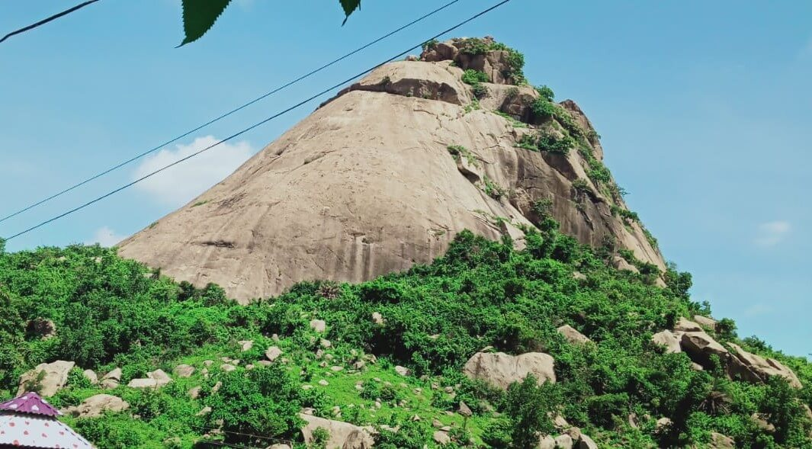
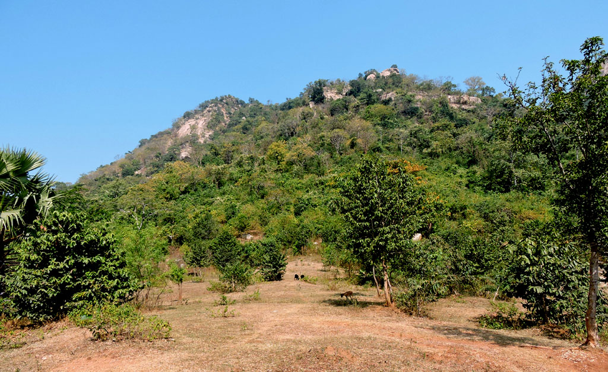
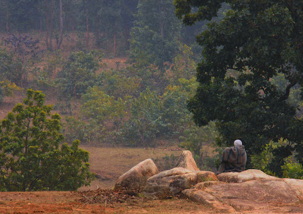
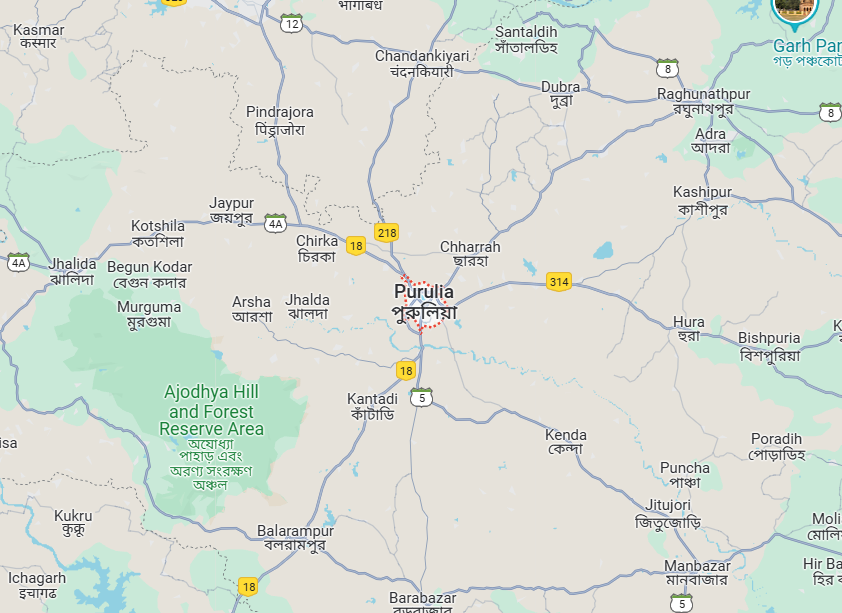

Purulia



Purulia, located in the western part of West Bengal, is known for its rugged terrain and picturesque landscapes. It offers a unique combination of adventure and scenic beauty. The region is dotted with hills, forests, and ancient temples, making it a perfect destination for adventure enthusiasts and nature lovers.
Ajodhya Hills, a part of the Eastern Ghats, is a popular spot for trekking, rock climbing, and camping. The hills offer stunning views and a chance to explore the local tribal culture. The nearby Bamni Falls is another attraction that adds to the adventure experience.
Purulia is also famous for its unique folk dances, such as the Chhau dance, which adds a cultural dimension to the adventure. Visitors can also explore the Joychandi Pahar, known for its scenic beauty and trekking opportunities. The forests in the region are home to a variety of wildlife, making it an excellent spot for wildlife photography and bird watching.
 Maplinked